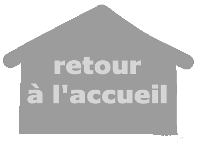

Je suis des cours depuis 10 ans avec Vivien Fawaz, une peintre plasticienne et iconographe.
Nous utilisons plusieurs techniques artistiques : pastel, aquarelle, acrylique, crayon …
Voici une lettre de sa part :Attestation cours Arts Plastiques
J'ai fait plusieurs stages de poterie, et un stage de sculpture sur bois.
J’aime visiter des musées, surtout des musées d’art moderne et contemporain.
L'option puis la spécialité Cinéma Audio-Visuel m'ont fait découvrir l'animation. Je suis allé en 2025 au Festival du Film d'Animation d'Annecy où j'ai vu plusieurs court-métrages et films de commande.
J’ai réalisé plusieurs films d’animation.
Je vais régulièrement au cinéma (2 à 3 fois par mois). Mon réalisateur préféré est Quentin Dupieux. Mon film préféré est Flow de Gints Zilbalodis.
J'écoute énormément de musique, essentiellement du metal. J'ai assisté à beaucoup de concerts, comme ceux de Lorna Shore, Fit for a King, Whitechapel, Shaka Ponk, Damien Saez, Memphis May Fire.
Je pratique l’escalade depuis 5 ans, je participe aux coupes de l’Ain (5ème l’année dernière).
Le fait que je vais très souvent dans les Alpes et ma pratique de l'escalade influencent énormément l'art que je fais. Je crée des paysages de montagnes, m'intéressant particulièrement à la perspective atmosphérique.
J'ai visité plusieurs pays européens, pour leurs paysages (Norvège, Ecosse), leurs monuments (Russie, Italie, Londres ...) et les musées (surtout les musées d'art contemporain).
Je suis bénévole pour la troupe de théâtre "Rêves en Scène" depuis quelques années. Je participe au montage et démontage des décors de la salle, à la buvette et à l'accueil des spectateurs.
J'aide régulièrement bénévolement le club d'escalade "Plaine de l'Ain Escalade" au démontage et nettoyage des prises.
En 2024, j'ai aidé bénévolement à l'installation du Festival "O'tour de l'eau" organisé à Chatillon La Palud par l'association "Agir pour la terre de nos enfants".
J'ai été éco délégué de ma classe de première.
J'ai été élu pendant deux ans au Conseil Municipal des Jeunes de ma commune, nous avons organisé une collecte pour financer une tyrolienne (j'ai fait le dessin de l'affiche de la cagnotte).